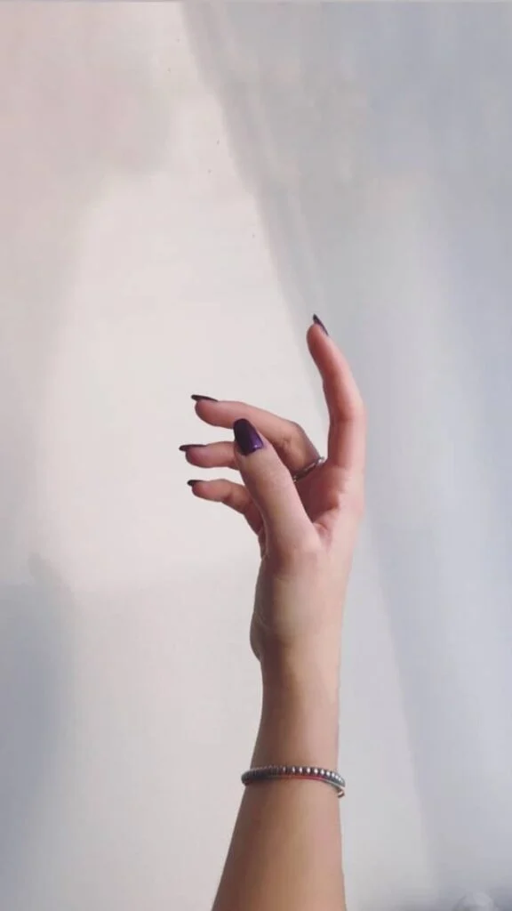
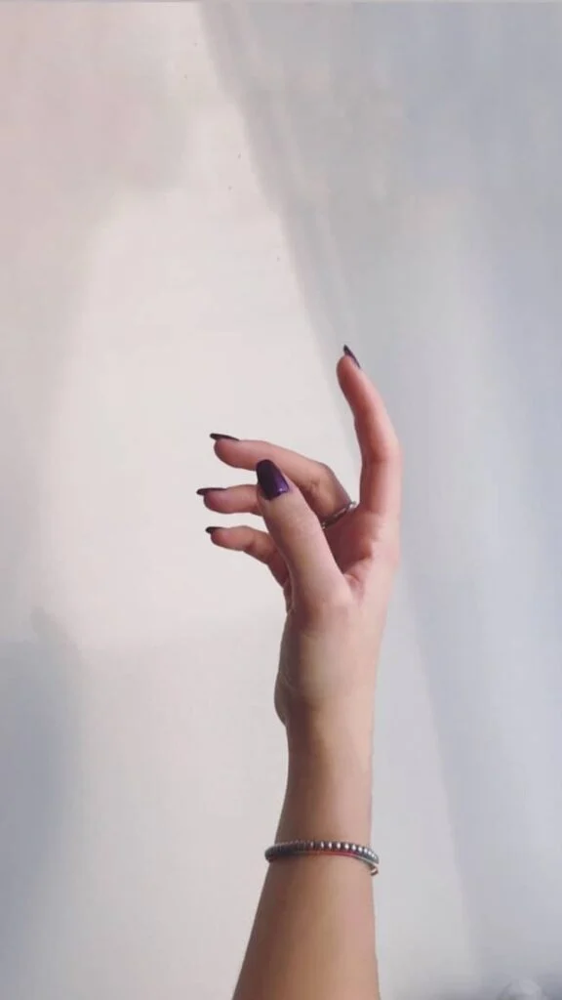
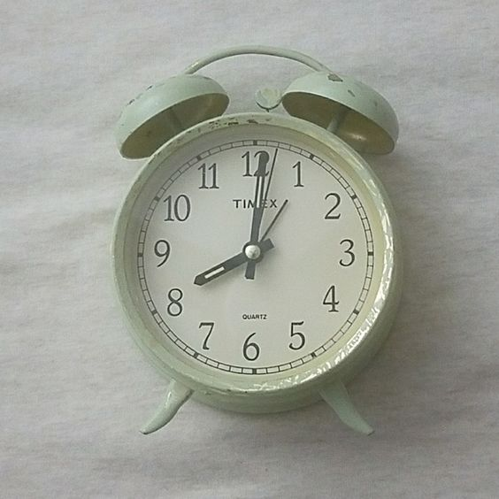
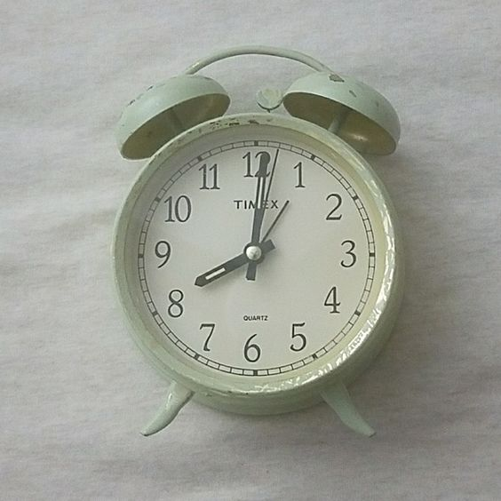
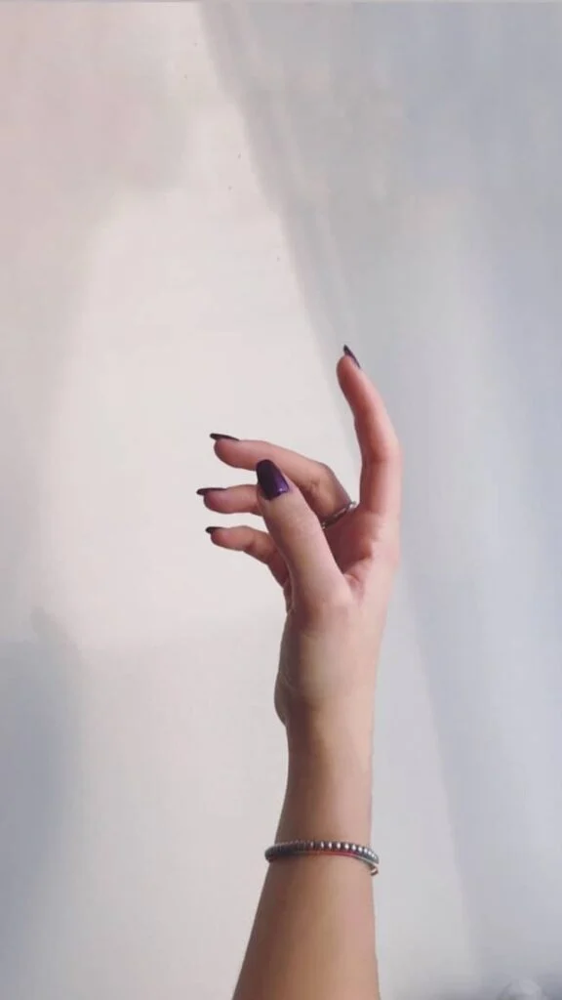
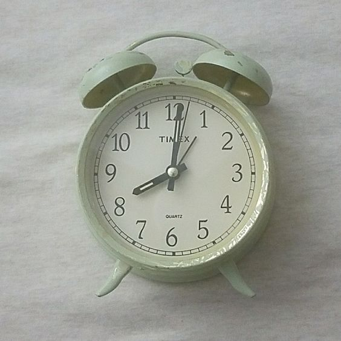
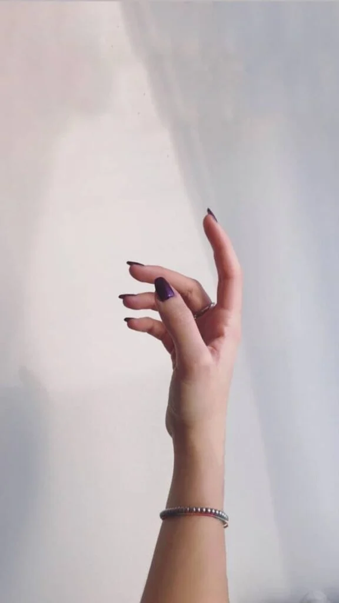
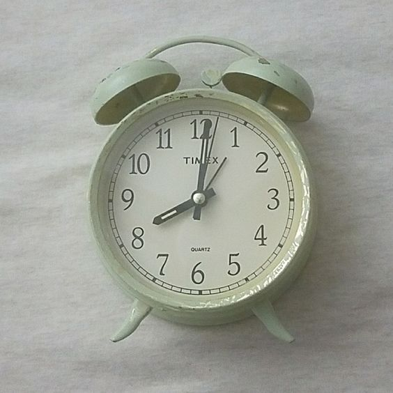

Describing Kim in A Set of Picture
 



 


Would you rather?


 





In their unassuming, understated way, Defenders help make the world go round. Hardworking and devoted, people with this personality type feel a deep sense of responsibility to those around them. Defenders can be counted on to meet deadlines, remember birthdays and special occasions, uphold traditions, and shower their loved ones with gestures of care and support. But they rarely demand recognition for all that they do, preferring instead to operate behind the scenes.